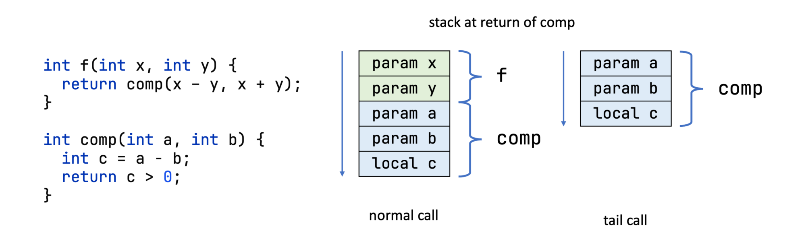

Tail calls in hello-ebpf¶
Blog series: Part 4 — Tail calls and your first eBPF application
Javadoc: BPFProgArray
Source: BPFProgArray.java
See also: XDP Hook · TC Hook · BPF Maps

BPF programs cannot recurse or exceed the verifier's instruction budget, so
long dispatch chains are split into stages connected by tail calls:
bpf_tail_call(ctx, &prog_array, slot) transfers execution to the program
at prog_array[slot] and never returns. hello-ebpf gives you two surfaces
for this pattern:
- Raw
BPFProgArray— the primitive.progs.register(slot, handle)plusprogs.tailCall(ctx, slot). Shown inTailCallDemobelow. @BPFTailCallTable— auto-registers slots from an enum, and validates slot names at compile time. Shown inHelloTailCallbelow.
@BPFTailCallTable — HelloTailCall¶
HelloTailCall.java is a 3-stage XDP pipeline. Every incoming packet passes through
three sub-programs in sequence: parseEthImpl → parseIpImpl → countImpl. Each stage
increments a counter and tail-calls the next one; the last stage returns XDP_PASS.
@BPF(license = "GPL")
public abstract class HelloTailCall extends BPFProgram implements XDPHook {
public enum Slot { PARSE_ETH, PARSE_IP, COUNT }
// Integer literals for use inside @BPFFunction bodies.
// Slot.ordinal() is the source of truth; these must stay in sync.
static final int SLOT_PARSE_ETH = 0;
static final int SLOT_PARSE_IP = 1;
static final int SLOT_COUNT = 2;
@BPFTailCallTable(slots = Slot.class)
@BPFMapDefinition(maxEntries = 3)
BPFProgArray dispatch;
final GlobalVariable<@Unsigned Integer> parseEthCalls = new GlobalVariable<>(0);
final GlobalVariable<@Unsigned Integer> parseIpCalls = new GlobalVariable<>(0);
final GlobalVariable<@Unsigned Integer> countCalls = new GlobalVariable<>(0);
@BPFFunction(section = "xdp")
@TailCallSlot("PARSE_ETH")
public xdp_action parseEthImpl(Ptr<xdp_md> ctx) {
parseEthCalls.set(parseEthCalls.get() + 1);
dispatch.tailCall(ctx, SLOT_PARSE_IP);
return xdp_action.XDP_PASS; // unreachable — tailCall never returns
}
@BPFFunction(section = "xdp")
@TailCallSlot("PARSE_IP")
public xdp_action parseIpImpl(Ptr<xdp_md> ctx) {
parseIpCalls.set(parseIpCalls.get() + 1);
dispatch.tailCall(ctx, SLOT_COUNT);
return xdp_action.XDP_PASS;
}
@BPFFunction(section = "xdp")
@TailCallSlot("COUNT")
public xdp_action countImpl(Ptr<xdp_md> ctx) {
countCalls.set(countCalls.get() + 1);
return xdp_action.XDP_PASS;
}
@Override
public xdp_action xdpHandlePacket(XDPContext ctx) {
// Entry point — dispatch to the first stage.
dispatch.tailCall(ctx, SLOT_PARSE_ETH);
return xdp_action.XDP_PASS;
}
public static void main(String[] args) throws InterruptedException {
try (HelloTailCall program = BPFProgram.load(HelloTailCall.class)) {
// No manual register(...) calls — the annotation processor
// emits dispatch.register(0, ...), dispatch.register(1, ...) etc.
// in the generated constructor.
program.xdpAttach();
for (int i = 0; i < 30; i++) {
System.out.printf("parseEth=%d parseIp=%d count=%d%n",
program.parseEthCalls.get(),
program.parseIpCalls.get(),
program.countCalls.get());
Thread.sleep(1000);
}
}
}
}
What @BPFTailCallTable does¶
The annotation processor sees @BPFTailCallTable(slots = Slot.class) and emits these
lines into the generated HelloTailCallImpl constructor:
dispatch.register(0, getProgramByName("parseEthImpl")); // PARSE_ETH
dispatch.register(1, getProgramByName("parseIpImpl")); // PARSE_IP
dispatch.register(2, getProgramByName("countImpl")); // COUNT
@TailCallSlot("PARSE_ETH") on parseEthImpl is the link: it declares which enum
constant maps to that method. The processor validates the name at compile time — a typo
produces an error, not a silent wrong slot.
Raw BPFProgArray — TailCallDemo¶
TailCallDemo.java uses BPFProgArray directly without @BPFTailCallTable.
The entry point counts packets and tail-calls to one of two sub-programs: slot 0 drops
the packet, slot 1 passes it. Every third packet is dropped; all others pass.
@BPF(license = "GPL")
public abstract class TailCallDemo extends BPFProgram implements XDPHook {
static final int SLOT_DROP = 0;
static final int SLOT_PASS = 1;
@BPFMapDefinition(maxEntries = 2)
BPFProgArray progs;
final GlobalVariable<@Unsigned Integer> packetCount = new GlobalVariable<>(0);
/** Sub-program registered in slot 0 — drops the packet. */
@BPFFunction(section = "xdp")
public xdp_action xdpDropPacket(Ptr<xdp_md> ctx) {
return xdp_action.XDP_DROP;
}
/** Sub-program registered in slot 1 — passes the packet. */
@BPFFunction(section = "xdp")
public xdp_action xdpPassPacket(Ptr<xdp_md> ctx) {
return xdp_action.XDP_PASS;
}
@Override
public xdp_action xdpHandlePacket(XDPContext ctx) {
@Unsigned int count = packetCount.get() + 1;
packetCount.set(count);
int slot = (count % 3 == 0) ? SLOT_DROP : SLOT_PASS;
progs.tailCall(ctx, slot);
return xdp_action.XDP_PASS; // reached only if tailCall finds no handler
}
public static void main(String[] args) throws InterruptedException {
try (TailCallDemo program = BPFProgram.load(TailCallDemo.class)) {
// Manual registration — required when not using @BPFTailCallTable.
program.progs.register(SLOT_DROP, program.getProgramByName("xdpDropPacket"));
program.progs.register(SLOT_PASS, program.getProgramByName("xdpPassPacket"));
program.xdpAttach();
while (true) {
System.out.println("Packets seen: " + program.packetCount.get());
Thread.sleep(1000);
}
}
}
}
When to use raw BPFProgArray¶
Use @BPFTailCallTable by default — it gives you type-safe enum slots and compile-time
name validation. Reach for raw BPFProgArray only when:
- You want to swap individual slots at runtime without reloading the whole program (see
replaceSlotbelow). - You are building a plugin system where sub-programs are loaded independently.
Hot-swap via replaceSlot¶
BPFProgArray.replaceSlot(int slot, ProgramHandle newHandle) atomically updates a
prog-array entry using bpf_map_update_elem. Live tail-calls see the new target
immediately — no kernel restart needed:
// In TailCallDemo: swap slot 1 from xdpPassPacket to xdpDropPacket
// (now drop everything instead of passing)
program.progs.replaceSlot(SLOT_PASS, program.getProgramByName("xdpDropPacket"));
This works with any program type and requires no special load-time wiring.
Rules and constraints¶
@BPFTailCallTable¶
maxEntrieson the sibling@BPFMapDefinitionmust equal the enum constant count.@TailCallSlot("X")—Xmust be the exact name of a constant of the table'sslots()enum.- If a class declares more than one
@BPFTailCallTable, disambiguate with@TailCallSlot(value="A", table="<fieldName>"). - Slot index =
Enum.ordinal(). Reorder enum constants only if you update every downstreamSLOT_*constant accordingly. - Integer literals are needed for
dispatch.tailCall(ctx, N)inside@BPFFunctionbodies because the BPF compiler plugin cannot lowerSlot.PARSE_IP.ordinal()to a C integer at translation time.
Compile-time errors¶
| Error message | Cause |
|---|---|
@BPFTailCallTable only applies to BPFProgArray fields |
Applied to a non-BPFProgArray field |
@BPFTailCallTable requires @BPFMapDefinition on the same field |
Missing @BPFMapDefinition sibling |
slots enum has N constant(s) but @BPFMapDefinition(maxEntries=M) disagrees |
maxEntries doesn't match enum size |
@TailCallSlot("Z") — no such constant in enum <FQN>. Known: [A, B, C] |
Typo in slot name |
Kernel limits¶
- Max chain depth: 33 tail calls per original invocation. After that,
bpf_tail_callsilently does nothing (returns-ELOOPinternally). - Shared stack: tail-called programs reuse the caller's stack frame. All stages share the same 512-byte BPF stack.
- Program type: every program in a
BPFProgArraymust match the type of the calling program (e.g. all XDP or all TC). The kernel rejects mismatches at load time.